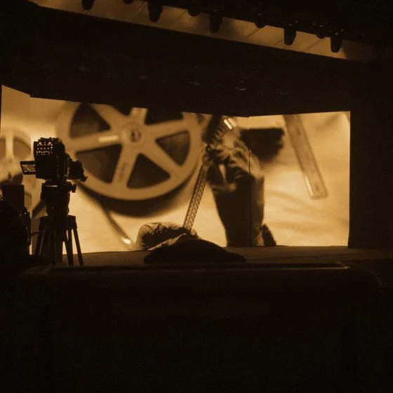

نرافق الكتّاب وصنّاع الأفلام في تطوير أعمالهم، وصقل رؤيتهم، وتهيئة نصوصهم لتكون جاهزة للصناعة، وفتح الطريق أمامهم نحو الفرص الحقيقية داخل الصناعة.
نصك محمي هنا، ونشجعك على تسجيله لدى SAIP.
البداية
توجد أفكار ونصوص واعدة، لكن بعض الكتّاب لا يجدون من يقرأ أعمالهم بجدية، أو يساعدهم على تطويرها، أو يوضح لهم الخطوة التالية.
من هنا بدأت سين ون
اقرأ الحكاية كاملة
ما نفعله
نبحث عن الأصوات والقصص قبل أن تلتفت إليها الصناعة.
نقرأ المشروع كفيلم لا كنص، ونعمل مع الكاتب على أقوى نسخة منه.
نأخذ المشاريع القوية إلى الجهات التي تستطيع أن تصنعها.
القراءة
نقرأ النص لنفهم ما يميّزه وما يحتاج إلى تطوير، ثم نحدد معه الخطوة التالية، سواء كانت إعادة كتابة، أو تطويرًا أعمق للمشروع، أو الوصول إلى فرصة مناسبة في الصناعة.
وتبدأ القراءة بتقرير مفصّل يكتبه قارئ متخصص عبر ثمانية محاور:
قبل أن تُرسل نصك
أصوات جديدة
لها بصمة خاصة
قصص تستحق أن تُرى
على الشاشة الآن
أنواع وزوايا
وطرق سرد غير مألوفة
مشاريع بفكرة قوية
ما زالت تحتاج تطويرًا
صنّاع أفلام لديهم ما يريدون قوله،
ويريدون بناء هوية سينمائية حوله
الخدمات
سعر إطلاق مؤقت
100 - 400
يُحدَّد السعر بحسب عدد صفحات النص.
تقرير ملاحظات احترافي لفيلمك القصير يحدد موقع نصك بدقة، بملاحظات عملية قابلة للتطبيق مع إمكانية ترشيح النصوص المتميزة إلى جهات في الصناعة.
ماذا سأحصل عليه؟10 إلى 15 يوم عمل
قدّم نصكسعر إطلاق مؤقت
800 - 1,200
يُحدَّد السعر بحسب عدد صفحات النص.
تقرير ملاحظات احترافي لفيلمك الطويل يحدد موقع نصك بدقة، بملاحظات عملية قابلة للتطبيق مع إمكانية ترشيح النصوص المتميزة إلى جهات في الصناعة.
ماذا سأحصل عليه؟حتى 4 أسابيع
قدّم نصكسعر إطلاق مؤقت
150
تقييم مبكر للمعالجة يحدد مدى جاهزيتها للتحول إلى سيناريو مكتمل.
ماذا سأحصل عليه؟7 إلى 12 يومًا
قدّم نصكيمكنك إعادة تقديم نسخة مطوّرة من العمل نفسه (Draft 2) مجانًا بعد استلام التقييم الأول.
الرحلة
ست خطوات يمرّ بها كل مشروع عندنا، من لحظة وصوله حتى طاولة المنتج.
يرفع الكاتب نصه ومعلومات مشروعه الأساسية.
يقرأ النصّ قارئ متخصص ويعدّ تقييمًا احترافيًا لعناصره.
يتسلّم الكاتب تقريره ويبدأ تطوير نصه بناءً عليه.
تُرشَّح النصوص الأعلى تقييمًا بموافقة الكاتب الكتابية.
يُضاف المشروع إلى مكتبة خاصة ويُشارك مع جهات الصناعة.
فرص فعلية لتطوير المشروع أو نقله إلى مراحل إنتاجية.
للكتّاب
تحتاج إلى من يفهم لماذا تريد أن تصنع هذا الفيلم.
نحن لا نخبرك بما يجب أن يكون عليه فيلمك، بل نساعدك على الوصول إلى أقوى نسخة مما تحاول قوله أنت.
قدّم نصكللصناعة
حين يصلك مشروع منّا، يكون قد قُرئ وفُهم، وعُرف ما يحتاجه وما يميّزه.
نختصر عليك وقت التقييم الأول: قصة أوضح، واتجاه إبداعي أقوى، وفهم مكتوب لما هو هذا الفيلم ولمن.
تواصل معناالفريق
قرّاء من صنّاع الأفلام وكتّاب السيناريو، ومنتج تطوير إبداعي يتولّى المشاريع بعد التوصية.
حسن زروق
قائد التطوير الإبداعي
من الكتّاب
من ردودهم بعد أن وصلتهم تقاريرهم.
انا ماعندي استفسار ولاتوضيح
بس التقييييم الي جاني ، اول مره احس انه ودي ابكي ، لانه التقييييم الحمد لله كان عادل وانصفني
وبالعكس خلاني اتشجع اكثر واكثر في تقديماتي وفي اني احارب عشانه اكثر واكثر انا مؤمنه بليس حرج والحين خليتوني بعد هالتقييييم آمن فيه اكثر واكثر
اتمنى اتعرف ع القارئ واقوله شكراً وجميلك راح ارده في انك راح تشوف ليس حرج ان شاء الله يفوز بمنح وراح تشوفه ع الشاشات بإذن الله
واحب اشكر منصة سين ع اختيارها لليس حرج وتقييمها لي
اكرر شكري
تستحقو كل الاحترام والتقدير والشهره ان شاء الله وتوصلو لأعلى المستويات
Another step forward for BRWAL.
Grateful to Scene One for this opportunity, and for every step that helps us grow, develop and make film further.
لديك أسئلة؟
تأسست Scene One بهدف مساعدة كتّاب السيناريو الصاعدين على دخول صناعة الأفلام.
تحصل على تقرير مكتوب ومفصل من قارئ متخصص. يوضح التقرير نقاط قوة السيناريو، والجوانب التي يمكن تطويرها، ويقدم اقتراحات عملية للمسودة التالية.
يُعرف هذا النوع من التقارير في صناعة السينما والتلفزيون باسم Script Coverage. ونقدمه في سين ون بوصفه قراءة احترافية متأنية تتضمن ملاحظات عملية تساعد الكاتب على تطوير نصه.
هذه الخدمة مخصصة لكتّاب السيناريو وصنّاع الأفلام في مختلف مراحل العمل، ممن يرغبون في الحصول على نظرة خارجية متخصصة قبل إعادة الكتابة، أو تقديم النص، أو طرح المشروع، أو تطويره بشكل أعمق.
من الصعب أن ترى عملك بموضوعية كاملة عندما تكون أنت مؤلفه. يساعدك القارئ المتخصص على فهم ما ينجح في النص، وما قد يحتاج إلى توضيح، وأين تضعف القصة، وما التغييرات التي قد تحقق أكبر أثر.
بحسب نوع الخدمة، يتناول التقرير الفكرة والموضوع، وعنصر الجذب، والرهانات والحبكة، والشخصيات، والحوار، والبناء والإيقاع، وقابلية الإنتاج، والعرض العام.
نعم. يتضمن التقرير عرضًا واضحًا لفكرة المشروع وقصته الأساسية، إلى جانب ملاحظات حول نقاط قوته الإبداعية والجوانب التي يمكن تطويرها.
قد يقدم القارئ اقتراحات عملية ويحدد مسارات محتملة لإعادة الكتابة. لكن التقرير لا يتضمن إعادة كتابة السيناريو، ولا يفترض وجود طريقة واحدة صحيحة لتطويره.
يركز التقرير أساسًا على ملاحظات واضحة وبنّاءة، بدل اختزال السيناريو في رقم واحد. وعند الاقتضاء، قد تقدم سين ون توصية داخلية أو تحدد مدى ملاءمة المشروع للترشيح.
اختر الخدمة الأنسب لمشروعك، وأكمل بيانات التقديم، وارفع ملفك، ثم ادفع باستخدام إحدى وسائل الدفع المعتمدة. ستصلك رسالة تأكيد بعد استلام طلبك.
يرجى تقديم السيناريو بصيغة PDF، ما لم يذكر نموذج التقديم صيغة أخرى. تأكد من أن الملف كامل، وواضح، وجاهز للقراءة.
نعم. تقدم سين ون خدمة منفصلة للمعالجات التي لم تتحول بعد إلى سيناريو مكتمل. وينبغي أن توضح المعالجة القصة، والشخصيات الرئيسية، والمسار الدرامي، والفيلم الذي يتجه المشروع إلى أن يصبحه.
نستقبل حاليًا النصوص القصيرة التي تتراوح تقريبًا بين 10 و40 صفحة، ونصوص الأفلام الطويلة التي تتراوح تقريبًا بين 80 و120 صفحة، إضافة إلى المعالجات المقدمة عبر خدمة المعالجة.
نعم. يجب تقديم كل مشروع بشكل منفصل حتى يمكن إسناده ومعالجته وقراءته بصورة مستقلة.
يقرأ نصك قارئ متخصص لديه خبرة في كتابة السيناريو، أو صناعة الأفلام، أو تطوير المشاريع، أو مجالات ذات صلة بالصناعة. وقد يختلف القارئ بحسب طبيعة المشروع وتوافر القرّاء.
تتولى سين ون إسناد النص إلى القارئ المناسب بحسب طبيعة المشروع. وإذا أصبح اختيار القارئ متاحًا، فسيُوضح ذلك بوضوح أثناء التقديم.
تستغرق ملاحظات النصوص القصيرة عادةً من 10 إلى 15 يوم عمل. وقد تستغرق ملاحظات نصوص الأفلام الطويلة حتى أربعة أسابيع، بينما تستغرق ملاحظات المعالجات عادةً من 7 إلى 12 يومًا. وتبدأ المدة من لحظة إسناد المشروع إلى أحد القرّاء.
يُرسل التقرير إلكترونيًا إلى عنوان البريد المرتبط بطلبك.
يمكنك التواصل مع سين ون بشأن أي استفسار يتعلق بالخدمة أو التقرير. يشمل ذلك الاستشارات الإضافية أو مناقشة التقرير بشكل موسع بعد استلام التقرير.
نعم. يُتعامل مع نصك بوصفه مادة سرية، ولا يُشارك إلا مع الأشخاص المخولين بتقديم الخدمة. ولا يُشارك مع الشركاء الإنتاجيين دون موافقتك الكتابية الصريحة.
تحتفظ بكامل ملكية نصك وجميع حقوق الملكية الفكرية المرتبطة به. ويمنح تقديم العمل سين ون إذنًا محدودًا بالقدر اللازم لقراءته وتخزينه ومعالجته من أجل تقديم الخدمة المطلوبة.
لا. لا تستخدم سين ون النصوص المقدمة لتدريب أنظمة الذكاء الاصطناعي. كما يُمنع القرّاء من إدخال المواد المقدمة في أدوات الذكاء الاصطناعي دون موافقة كتابية مسبقة.
توصي سين ون بالنظر في تسجيل النص لدى الهيئة السعودية للملكية الفكرية أو الجهة المناسبة لتسجيل الحقوق قبل مشاركته. ولا يغني التسجيل عن الاحتفاظ بسجلات واضحة أو طلب المشورة القانونية المناسبة.
لا. تقدم الخدمة قراءة وملاحظات تطويرية، ولا تشمل إعادة كتابة السيناريو، أو التحرير التفصيلي، أو التدقيق اللغوي، أو تنسيق النص، أو ضمان قبوله من منتج، أو استوديو، أو مهرجان، أو مسابقة.
قد تساعدك الملاحظات على تحديد ما يحتاج إلى إعادة كتابة، والطريقة التي يمكنك من خلالها العمل على مسودتك التالية. أما خدمات إعادة الكتابة أو الإرشاد أو التطوير المستقلة فسيتم توضيحها وتسعيرها بشكل منفصل.
قد تُنظر بعض المشاريع المختارة للترشيح إلى جهات في الصناعة. ولا يتم الترشيح تلقائيًا، بل بعد الحصول على موافقة الكاتب الكتابية الصريحة. ولا تضمن سين ون اهتمام أي جهة بالمشروع، أو تطويره، أو تمويله، أو إنتاجه.
شراء الخدمة يضمن حصول نصك على قراءة احترافية وتقرير متكامل يساعدك على فهم نقاط قوته وفرص تطويره. أما التوصية أو الترشيح لفرص الصناعة، فتعتمد على جودة النص ومدى جاهزيته، ولا تُعد نتيجة مضمونة لشراء الخدمة. نؤمن بأن كل نص يستحق قراءة جادة، وأن الفرص تُبنى على استحقاق العمل وإمكاناته.
نعم. لن يُشارك نصك مع أي شريك إنتاجي دون موافقتك الكتابية الصريحة.
تختلف الأسعار بحسب نوع المشروع وحجمه. وتُعرض أسعار الإطلاق الحالية بوضوح في صفحة الخدمات قبل تقديم الطلب.
يتم الدفع عند تقديم المشروع، باستخدام إحدى وسائل الدفع المعتمدة الموضحة على المنصة.
يمكنك طلب استرداد كامل الرسوم قبل إسناد نصك إلى أحد القرّاء. وبعد إسناد النص وبدء العمل عليه، لا يمكن عادةً استرداد الرسوم. وإذا تعذر على سين ون تقديم الخدمة لأسباب تعود إلى المنصة، فسيُرد المبلغ كاملًا خلال 14 يوم عمل.
نعم. يمكنك تقديم نسخة مطوّرة من المشروع نفسه — المسودة الثانية — مجانًا بعد استلام التقرير الأول، وفقًا للشروط الموضحة للخدمة المعنية.
تهدف خدمة المسودة الثانية إلى قراءة مدى تطور المشروع استجابةً للتقرير الأول. وسيتم توضيح نطاق القراءة الثانية عند تقديم النسخة المطوّرة.
هدفنا أن نمنح النصوص الجيدة فرصة حقيقية للتقدّم نحو الصناعة. نبدأ بقراءة احترافية تساعدك على فهم إمكانات نصك ومدى جاهزيته، وقد تفتح الأعمال المتميزة بابًا لفرص أوسع من خلال شبكة علاقاتنا في القطاع السينمائي. ومع ذلك، لا نضمن الإنتاج أو التمويل أو القبول في المهرجانات والمسابقات، فهذه قرارات تعود إلى الجهات المعنية وتعتمد على عوامل متعددة.
نؤمن بأن كل نص يستحق أكثر من مجرد حكم بأنه جيد أو سيئ. لذلك، يقدم قارئ سين ون تقييمًا مهنيًا يتناول ما ينجح في النص، وما يحتاج إلى مزيد من العمل، مع ملاحظات تطويرية تساعدك على رؤية قصتك من منظور جديد واتخاذ خطواتك التالية بثقة.
غايتنا ليست إصدار الأحكام على النصوص، بل مساعدتها على الوصول إلى أفضل إمكاناتها.
تركّز قراءتنا على جوهر العمل السينمائي؛ من البناء الدرامي والشخصيات والحوار إلى وضوح الرؤية وتماسك القصة. وقد يلفت القارئ انتباهك إلى الأخطاء اللغوية التي تؤثر في تجربة القراءة أو فهم النص، لكن الخدمة لا تتضمن تدقيقًا لغويًا أو تحريرًا نصيًا شاملًا.
بهذا نضمن أن ينصبّ اهتمام التقرير على ما يهمّك في هذه المرحلة: قوة قصتك وإمكاناتها السينمائية.
صُممت خدمة القراءة الاحترافية لتمنح السيناريو الاهتمام الذي يستحقه، لذلك ينصبّ التقييم الأساسي على النص نفسه وعناصره الدرامية والفنية.
أما إذا كنت ترغب في تطوير عنصر الجذب (Logline) أو العرض التقديمي لمشروعك، فقد تتوفر خدمات مخصصة لذلك، وسيُوضح نطاق كل خدمة ومخرجاتها قبل التقديم، لتختار ما يناسب احتياجات مشروعك ومرحلته.
هل كتبت قصة تستحق أن تُرى؟ ابدأ من المشهد الأول.
قدّم نصك